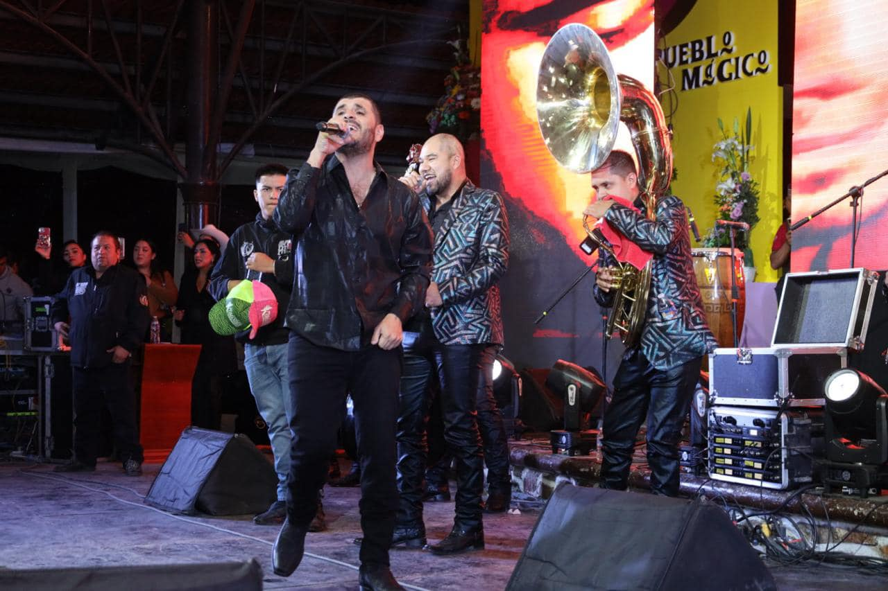
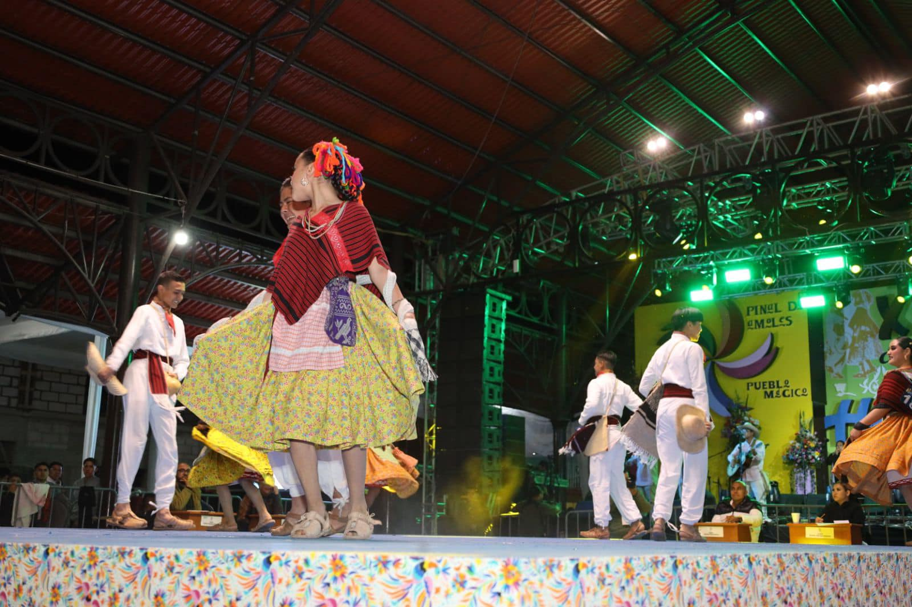
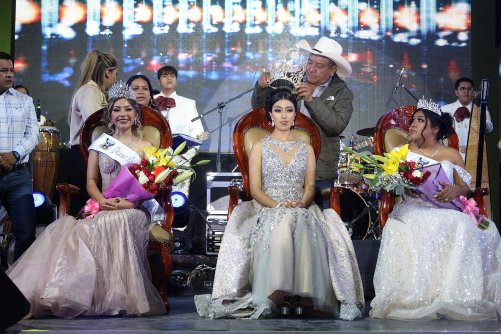
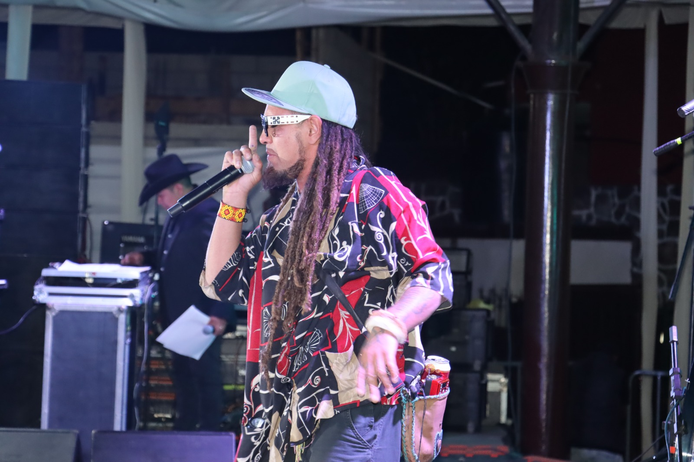
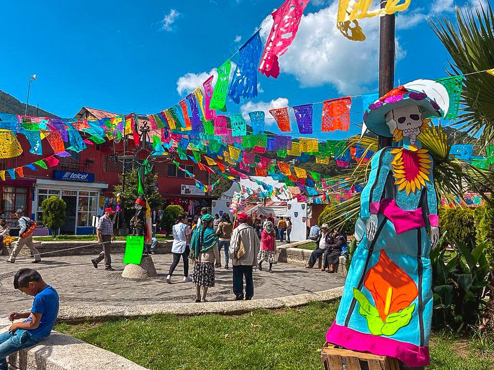
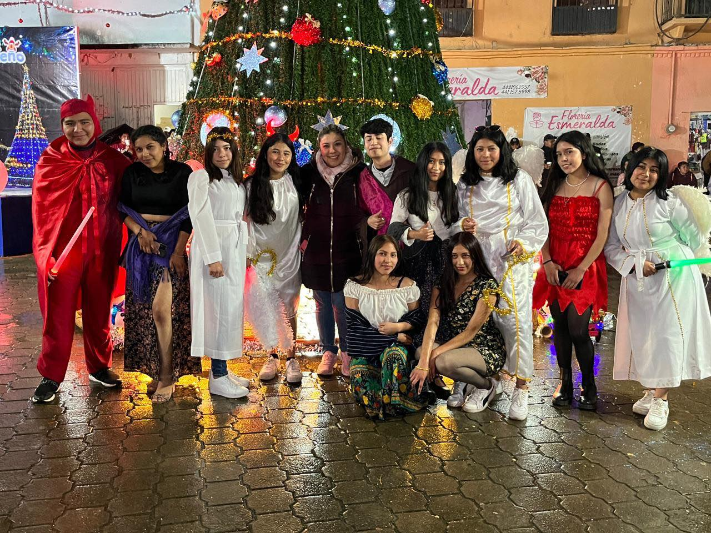
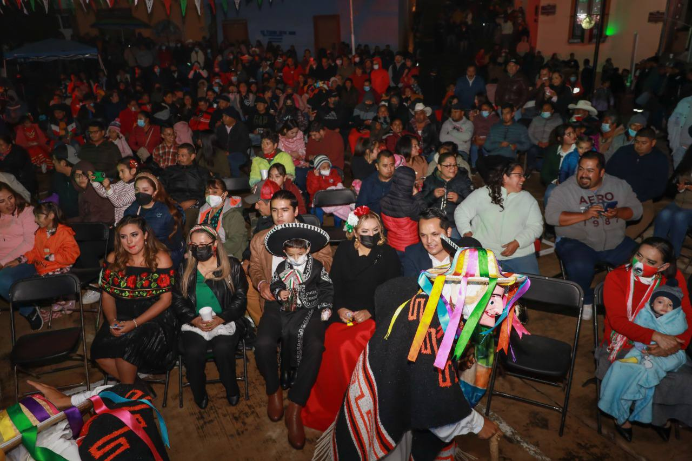
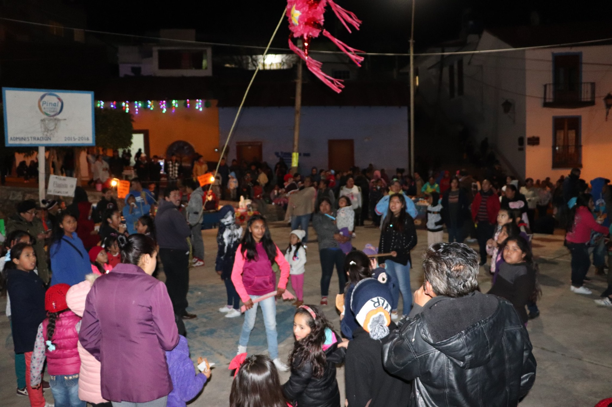

Pinal de Amoles es uno de los 18 municipios en que se divide el estado mexicano de Querétaro, localizado al norte del territorio, su cabecera es el pueblo de Pinal de Amoles.

Fiestas Patronales

Concurso de Huapango

Reina de las Fiestas Patronales

Concurso de Canto
Esta se celebra anualmente la fecha de su santo patrón en este caso "San José", en esta festvidad logran traer juegos mecánicos y sin duda lo mejor es el "Teatro del Pueblo" en donde traen a difrentes artistas este año se presento: "El Komander", "Los Kumbia Kigs", "Los Alameños de la Sierra", entre otros artistas.
El Concurso de Huapango se realiza anualmente (este es parte de las "Fiestas Patronales"), este trata donde diferentes personas de la República Mexicana vienen a concursar para ganarse la estatuilla del concurso. En este vienen a bailar los 6 diferentes estilos de la huasteca como "Tamaulipas", "Hidalgo", "Puebla", "Veracruz", "San Luis Potosí" y "Querétaro", se divide por categorías "Huapangueritos", "Infantil", "Juvenil" y "Adulto".
Este se trata de que diferentes candidatas se postulan para porder ser la "Reina de las Fiestas Patronales", ya que se han postulado las candidatas hacen un certamen donde las candidatas se presentan, después de eso se hace la votación para ver quien queda, teniendo a la ganadora se hace la coronación en la inaguración de las fiestas.
El concurso de canto se realiza en "La Fiestas Patronales" en donde diferentes personas se inscriben para poder concursar, ya cuando todos los participantes se hayan presentado los jueces escogen a los tres primeros lugares.

Dia de Muertos

Encendido del árbol

Dia de la Independecia

Posadas
En esta festividad hacemos honor a nuestros seres queridos que ya no estan con nosotros, en este día hacemos lo que es "Concurso de Altares", Concurso de Catrinas, "Presentaciones de Grupo de Danza", "Ver una pelicula sobre el Dia de Muertos" y al final prendemos una vela para iluminar El Camino de Luz
Es una tradición de aqui el pueblo, en donde colocan árboles enormes en plazas o lugares emblemáticos y a cierta hora los encienden. Antes, durante y después del encendido amenizan con shows en vivo y toda clase de entretenimiento.
Para celebrar este acontecimiento histórico, se lleva a cabo una ceremonia liderada por el presidente del municipio, en donde gritan "Viva México", haciendo alusión al llamado de Hidalgo, al mismo tiempo que se ondea la bandera de México y se brindan respetos a los héroes de la patria.
Los niños, jóvenes y adultos se unen para “pedir posada” y festejar que alguien les abrió las puertas y les brindó alojamiento. Antojitos, buñuelos, ponche, velas, aguinaldos (dulces o frutas) y romper las piñatas son algunos de los elementos más representativos de las posadas.